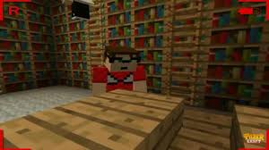

Uma das frases mais ditas e cômicas pelo Peter em todo o seriado foi "É o olho do homem aranha" justamente pela sua vestimenta:
Essa frase foi dita muitas vezes porque os olhos desenhados na camisa se pareciam com um sutiã.
Voltar para a aba de introdução